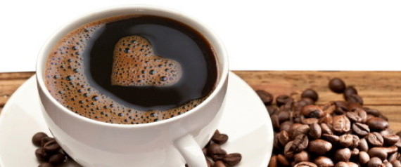

Kaffee mit einem guten Gewissen schmeckt noch besser
5 Gründe für Fair-Trade-Kaffee
Doch warum sollte man überhaupt Fair-Trade-Kaffe anstelle vom herkömmlichem trinken? Es gibt viele Gründe dafür, einige Wichtige seien kurz genannt:
Weil wir es können
Wir leben in einer der reichsten Nationen der Welt. Wenn nicht wir in der Lage sind, unseren Mitmenschen einen gerechten Preis zu zahlen für den Kaffee, den wir ihnen abkaufen und mit Genuss trinken – wer sollte es denn sonst sein?
Das bedeutet ja nicht, dass jeder gleich viel Geld für fair gehandelten Kaffee ausgeben muss. Die verschiedenen Systeme – etwa „Gepa+“ oder „Fairtrade“ – erlauben es dem Markt, sowohl preiswerten als auch teuren Fair-Trade-Kaffee anzubieten. So kann jeder Verbraucher nach seinen Möglichkeiten einkaufen. Hauptsache, es passiert überhaupt.
Fair-Trade-Kaffee ist gesünder
Zu den Fair-Trade-Regeln gehört nicht primär, aber auch der Umweltschutz. Zwar ist ökologische Landwirtschaft ist nicht zwingend vorgeschrieben, doch verschiedene Pestizide sind im Anbau untersagt. Schon damit wäre Kaffee mit Fair-Trade-Siegel theoretisch gesünder als ohne (was sich aber nicht automatisch auf andere Produkte übertragen lässt).
Doch zugleich sind etwa 65 Prozent aller „Fairtrade“-gesiegelten Produkte auch Bio. In der Bio-Landwirtschaft ist Gentechnik verboten und die meisten Pestizide sind nicht erlaubt. Kurz: Bio ist definitiv gesünder. Idealerweise kaufen Sie daher Kaffee, der sowohl Bio-zertifiziert als auch fair gehandelt ist.
Fair-Trade-Kaffee ist gesünder
Zu den Fair-Trade-Regeln gehört nicht primär, aber auch der Umweltschutz. Zwar ist ökologische Landwirtschaft ist nicht zwingend vorgeschrieben, doch verschiedene Pestizide sind im Anbau untersagt. Schon damit wäre Kaffee mit Fair-Trade-Siegel theoretisch gesünder als ohne (was sich aber nicht automatisch auf andere Produkte übertragen lässt).
Doch zugleich sind etwa 65 Prozent aller „Fairtrade“-gesiegelten Produkte auch Bio. In der Bio-Landwirtschaft ist Gentechnik verboten und die meisten Pestizide sind nicht erlaubt. Kurz: Bio ist definitiv gesünder. Idealerweise kaufen Sie daher Kaffee, der sowohl Bio-zertifiziert als auch fair gehandelt ist.
Fair-Trade-Kaffee ist sozialer
Gerechte Handelsbeziehungen und bessere Arbeitsbedingungen für die Kaffeebauern stehen im Mittelpunkt vieler fairen Handelsbemühungen. Stark vereinfacht gesagt geht es darum, dass alle Handelspartner von ihrer Arbeit leben können sollen. Die meisten Kaffeebauern haben aber keinen geregelten Zugang zum Exportmarkt, sehen sich stark schwankenden Weltmarktpreisen ausgesetzt und können immer wieder ihre Produktionskosten nicht decken.
Fair Trade will das ändern. Die Produzenten erhalten garantierte Preise, die Weltmarktschwankungen ausgleichen. Sie erhalten Unterstützung in zahlreichen sozialen Aspekten und bei der Verbesserung von Arbeitsbedingungen. Fairer Handel stärkt oft den kleinbäuerlichen Anbau und lokale Organisationsstrukturen, sorgt für Mitarbeiterausbildung, stärkt die Verhandlungsposition der Produzenten, verringert Kinderarbeit und vieles mehr.
Fair-Trade-Kaffee bewegt Märkte
Über 100 Millionen Menschen in über 70 Ländern leben von der Kaffeeproduktion. Nach den USA ist Deutschland der zweitgrößte Importeur von Kaffee. Anders gesagt: Wie wir Kaffee trinken, verändert einen großen Teil der Welt.
Darum ist es wichtig, gerade beim Kaffee fair zu kaufen und zu handeln – weil wir damit einen enormen Markt mitgestalten. Wir gestalten ihn so oder so, mit fair gehandeltem Kaffee tun wir es eben fairer.
Fair-Trade-Kaffee ist nachhaltiger
Hier wird es ein bisschen schwammig, denn die Frage ist, was „nachhaltig“ in diesem Fall eigentlich heißt. Gemeint ist damit nicht ausschließlich mehr Umweltschutz, sondern dass man eine „nachhaltige Entwicklung der Produktion“ fördert. Man will selbstzerstörerischen Raubbau verhindern, nicht nur aus Umweltschutzgründen, sondern auch, um Erträge zu steigern und stabil zu halten. Weil das auch für die Produzenten sinnvoll ist.
Und im Ergebnis führt auch das zu einer nachhaltigeren Produktion. So sehen Fair-Trade-Kriterien meist auch vor, verantwortungsvoll mit der Ressource Wasser umzugehen und wenig Müll zu produzieren. Sie animieren dazu, erneuerbare Energien einzusetzen, verbieten bestimmte Pestizide und sorgen dafür, dass Mitarbeiter in Sachen Umweltschutz geschult werden. Und auch hier ist für uns Kunden Bio + Fair die beste Wahl.